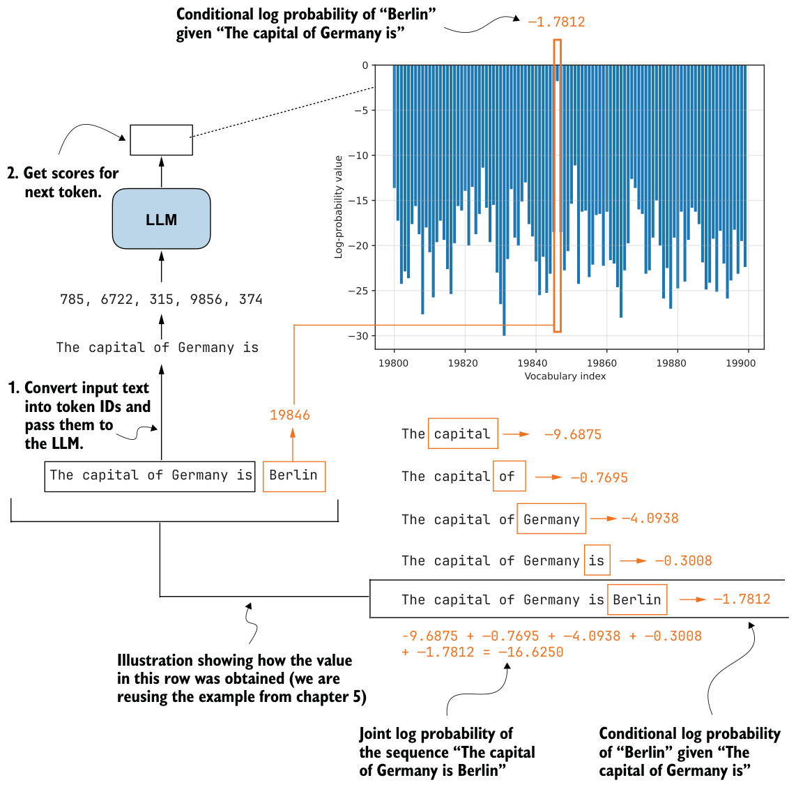
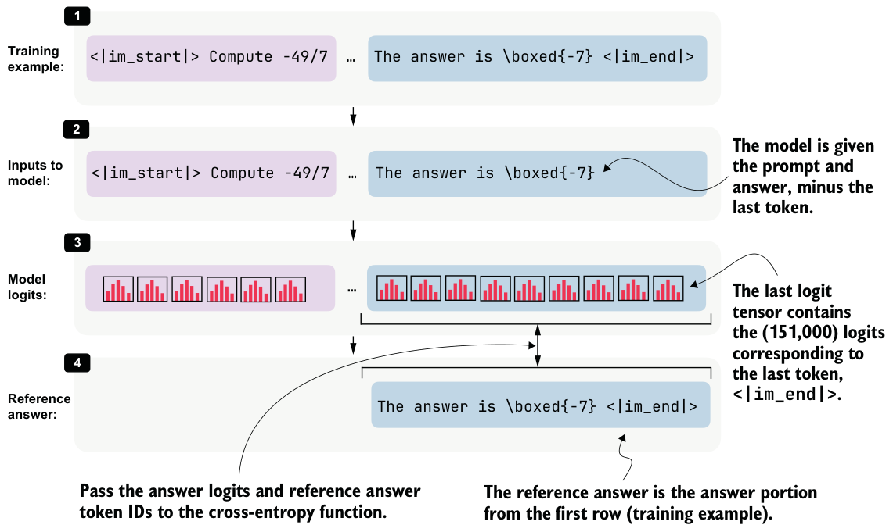

8.6Computing the training and validation losses
Next, we implement the cross-entropy loss that will serve as the training signal during distillation when we implement the training loop later. We will also reuse the same computation on the validation set to monitor progress during training.
If you have a deep learning background, you may already know cross-entropy from classification tasks. The idea is the same here, except that the target class we want to predict at each position is the next token in the teacher-generated sequence.
We can connect the cross-entropy loss directly to the log-probability computations from chapters 5 and 6. As discussed there, log probability measures how much probability the model assigns to the correct next token. Higher log probability means the model is more confident in the correct token, and lower log probability means the opposite. Reusing our “The capital of Germany is Berlin” example from previous chapters, figure 8.12 recaps this.
Cross-entropy is simply the negative average of the token log probabilities shown in figure 8.12. For instance, if –16.6250 is the log probability, the negative log probability is 16.6250, and the negative average log probability (or cross-entropy) is 16.6250/5 = 3.325. Note that the 5 is there because the sequence has 5 target predictions whose log probabilities are being averaged: "capital", "of", "Germany", "is", and "Berlin". Similar to log probability, the closer the cross-entropy value is to 0, the better, because the model is more confident in the correct target token.
The sequence_logprob function from chapter 6 performs the computation shown in figure 8.12, which makes it a useful starting point for understanding how the distillation loss works. In this case, we’ll use the training example at index position 5730 because it is the shortest example in train_examples, as we can determine via compute_ length(train_examples), and therefore computes a bit more quickly than the other examples:
token_ids = train_examples[5730]["token_ids"]
prompt_len = train_examples[5730]["prompt_len"]
Instead of reporting the summed log probabilities returned by sequence_logprob, we’ll average them over the number of answer tokens. Summed log probabilities grow with sequence length, so they are not directly comparable across examples with shorter or longer answers. By dividing by the number of answer tokens, we’ll obtain a per-token quantity, which matches the form used by cross-entropy loss. We can compute the number of answer tokens by subtracting prompt_len from the total sequence length.
from reasoning_from_scratch.ch06 import sequence_logprob
tok = torch.tensor(token_ids, dtype=torch.long, device=device)
with torch.no_grad():
seq_logprob = sequence_logprob(model, tok, prompt_len)
num_answer_tokens = tok.numel() - prompt_len
avg_logprob = -seq_logprob / num_answer_tokens
print(f"Average logprob: {avg_logprob:.2f}")The resulting negative average log probability is 1.68.
We can now compute the same quantity using PyTorch’s cross_entropy function. Although the function is usually introduced for classification, it’s a natural choice here. For example, the model logits provide the predicted class distribution over the vocabulary, and the target sequence provides the correct class label at each position.
As in the previous average-logprob calculation, we’ll compute the loss only over the answer tokens and ignore the prompt tokens (the prompt is the context provided as input and not something we want the model to be penalized for reproducing). This is illustrated in figure 8.13.
<|im_end|>.
During distillation, we want the student to learn the teacher’s reasoning trace and final answer conditioned on the prompt. So, as shown in figure 8.13, we discard the logits and targets that correspond only to the prompt portion of the sequence when computing the cross-entropy.
input_ids = tok[:-1].unsqueeze(0)
target_ids = tok[1:]
logits = model(input_ids).squeeze(0)
first_answer_logit_idx = max(prompt_len - 1, 0)
answer_logits = logits[first_answer_logit_idx:]
answer_targets = target_ids[first_answer_logit_idx:]
with torch.no_grad():
ce_mean_direct = torch.nn.functional.cross_entropy(
answer_logits, answer_targets
)
print(f"Cross-entropy: {ce_mean_direct:.2f}")The resulting cross-entropy loss is 1.68, which is similar to that in listing 8.9, where we used the sequence_logprob function. In other words, cross_entropy implements the same core calculation in a more optimized way. For training, we’ll therefore use the built-in cross_entropy function rather than our custom log-probability function.
The compute_example_loss helper in listing 8.11 wraps this logic into a convenient function that calculates the answer-only loss for a single example. “Answer-only loss” means the training loss is computed only on the teacher’s answer tokens, not on the prompt tokens. The following listing puts it all together into a function that applies the whole logic, from target preparation to cross-entropy computation.
def compute_example_loss(model, example, device):
token_ids = example["token_ids"]
prompt_len = example["prompt_len"]
input_ids = torch.tensor(
token_ids[:-1], dtype=torch.long, device=device
).unsqueeze(0)
target_ids = torch.tensor(
token_ids[1:], dtype=torch.long, device=device
)
logits = model(input_ids).squeeze(0)
answer_start = max(prompt_len - 1, 0)
answer_logits = logits[answer_start:]
answer_targets = target_ids[answer_start:] loss = torch.nn.functional.cross_entropy(
answer_logits, answer_targets
)
return loss
with torch.no_grad():
loss = compute_example_loss(
model, train_examples[5730], device
)
print(f"Loss: {loss:.2f}")The resulting loss is 1.68 again, which indicates that the function in listing 8.11 works as intended.
Batching
Next, we’ll define a small wrapper that iteratively computes the average loss across multiple examples. This will be useful both for quick sanity checks and for tracking the validation loss during training.
@torch.no_grad()
def evaluate_examples(model, examples, device):
was_training = model.training
model.eval() total_loss = 0.0 num_examples = 0
for example in examples:
loss = compute_example_loss(model, example, device)
total_loss += loss.item()
num_examples += 1
if was_training:
model.train()
return total_loss / num_examples
train_loss = evaluate_examples(model, train_examples[:3], device)
print(f"Train loss (3 examples): {train_loss:.2f}")
val_loss = evaluate_examples(model, val_examples[:3], device)
print(f"Validation loss (3 examples): {val_loss:.2f}")This is the output:
Train loss (3 examples): 0.98
Validation loss (3 examples): 1.02We’ll reuse this evaluation function during training. Ideally, both quantities should decrease over time, which would indicate that the student model is becoming better at matching the teacher-generated target sequences.
In practice, the training loss, which is the loss computed on the training examples used for optimization, is often noisier because it is measured on the examples currently being optimized and can fluctuate depending on the sample order and recent parameter updates.
The validation loss, which is measured on a separate held-out validation set rather than on the examples currently being used for optimization, is computed without updating the model weights. As a result, it usually provides a cleaner signal of whether the student is improving in a way that generalizes beyond the training set. For this reason, the validation loss is often the more reliable metric to watch.